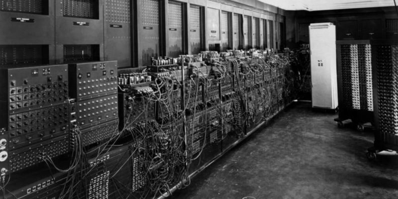

Primera generación de computadoras
ENIAC fue una de las primeras computadoras de la historia.
La primera generación de computadoras se extiende desde 1940 hasta 1956, y comienza con la invención de las primeras máquinas de cálculo automáticas, con propósitos inicialmente militares.
Estos aparatos de cálculo se basaban en la electrónica de válvulas y tubos al vacío. Se programaban con un conjunto de instrucciones simples en lenguaje máquina, que se suministraban al sistema a través de un conjunto de tarjetas perforadas de papel o de cartón. Estos sistemas podían llevar a cabo solo una operación por vez.
Muchas de estas computadoras eran modelos experimentales. Pesaban varias toneladas, llenaban el espacio de un cuarto completo y consumían varios kilovatios con cada simple operación de cálculo.
El modelo principal de esta generación fue la ENIAC, desarrollada en 1946. Ocupaba un sótano entero en la Universidad de Pensilvania, en Estados Unidos, y efectuaba hasta 5.000 sumas por segundo. Fue usada para los cálculos de la bomba de hidrógeno una vez acabada la Segunda Guerra Mundial. Por otro lado, la primera computadora de esta generación diseñada con fines comerciales fue la Univac I, desarrollada en 1951.